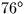

Next: The Hipparcos Catalogue and the ICRS
Up: Apparent Place to Observed Place
Previous: Refraction
The complete apparent place to observed place transformation
can be carried out by calling
sla_AOP.
For improved efficiency
in cases of more than one star or a sequence of times, the
target-independent calculations can be done once by
calling
sla_AOPPA,
the time can be updated by calling
sla_AOPPAT,
and
sla_AOPQK
can then be used to perform the
apparent-to-observed transformation. The reverse transformation
is available through
sla_OAP
and
sla_OAPQK.
(n.b. These routines use accurate but computationally-expensive
refraction algorithms for zenith distances beyond about .For many purposes, in-line code tailored to the accuracy requirements
of the application will be preferable, for example ignoring UT1-UTC,
omitting diurnal aberration and using
sla_REFZ
to apply the refraction.)
Next: The Hipparcos Catalogue and the ICRS
Up: Apparent Place to Observed Place
Previous: Refraction
SLALIB --- Positional Astronomy Library
Starlink User Note 67
P. T. Wallace
12 October 1999
E-mail:ptw@star.rl.ac.uk